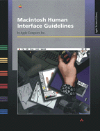

|

Macintosh Human
Interface GuidelinesMacintosh Human Interface
Guidelines provides authoritative information on the
theory behind the Macintosh "look and feel" and the
practice of using individual interface components. This
book includes many examples of good design and explains why
one implementation is superior to another. Anyone designing
or creating a product for Macintosh computers needs to
understand the information in this book.
Read this book to learn
- how people interact with computers
- the principles of the Macintosh human interface
- interface behaviors, such as responses to user input
from the mouse or keyboard
- interface elements, such as menus, windows, dialog
boxes, controls, and icons
- the importance of designing for worldwide markets and
for people with disabilities
- effective use of color
- guidelines for using language clearly and
consistently
- suggestions for creating an effective design process,
including how to manage complexity in software and how to
extend the interface beyond these guidelines
- sources of further information
At the back of the book is a checklist for evaluating
how well your program conforms to the human interface
guidelines.
To get the most out of this book, you should be familiar
with Macintosh computers. If you are a programmer, you
should also consult Inside Macintosh: Macintosh
Toolbox Essentials for complete information on the
technical implementation of your program and its
interface.
Programmers and interface designers may also be
interested in the companion to this book, the Electronic Guide to Macintosh
Human Interface Design.
Do you have questions or feedback about Apple's Human
Interface Guidelines? Send us e-mail at machi@apple.com.
|